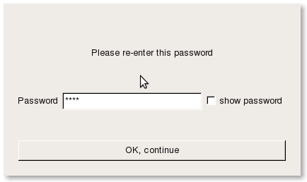
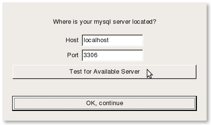
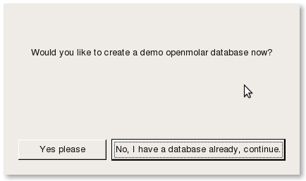
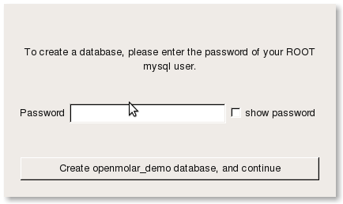
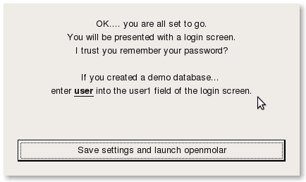

a common networking solution would be to have a server at 192.168.0.2


| I've changed the way openmolar saves it's settings, and made it easier to install a demo database. | |
| Hopefully this is intuitive? | |
| rinse and repeat to catch those typing errors |  |
| default server and port? a common networking solution would be to have a server at 192.168.0.2 |
 |
| an option to create a demo database. |  |
| to create a demo database you need to know the pass root mysql password |  |
| this page is skipped for 'demo' users | |
| all set - this saves your settings to /etc/openmolar/openmolar.conf on linux or C:\\Program Files\openmolar\openmolar.conf on windows. |  |